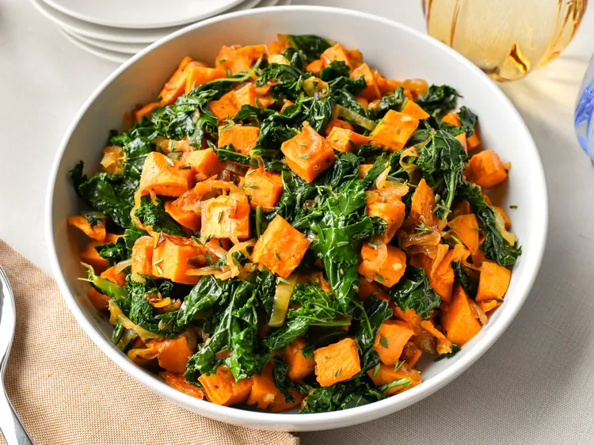

Kale Salad

Description
This kale salad is a nutritious and flavorful dish made with fresh kale, roasted sweet potatoes, and a tangy lemon vinaigrette. It's perfect as a side dish or a light meal.
Ingredients
- 4 cups chopped kale, stems removed
- 1 large sweet potato, peeled and diced
- 2 tablespoons olive oil
- 1/4 cup dried cranberries
- 1/4 cup chopped walnuts
- 1/4 cup crumbled feta cheese (optional)
- For the dressing:
- 2 tablespoons olive oil
- 1 tablespoon lemon juice
- 1 teaspoon honey
- Salt and pepper to taste
Steps
- Preheat the oven to 400°F (200°C). Toss the diced sweet potatoes with 2 tablespoons of olive oil, salt, and pepper. Spread them on a baking sheet and roast for 20-25 minutes, or until tender and slightly caramelized.
- While the sweet potatoes are roasting, prepare the dressing by whisking together the olive oil, lemon juice, honey, salt, and pepper in a small bowl.
- In a large bowl, massage the chopped kale with a pinch of salt for 2-3 minutes until it becomes tender and darkens in color.
- Add the roasted sweet potatoes, dried cranberries, chopped walnuts, and feta cheese (if using) to the bowl with the kale.
- Pour the dressing over the salad and toss to combine everything evenly.
- Serve immediately or refrigerate for 30 minutes to allow the flavors to meld together.